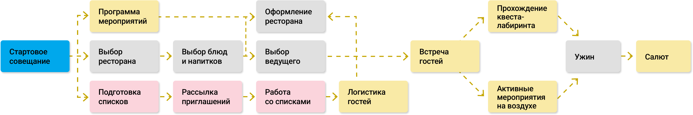

Сетевая диаграмма
представляет из себя важнейший инструмент проектного управления.
Без длительностей и ресурсов
команда проекта ищет взаимосвязи между операциями
и выстраивают логику проекта.
Пример сетевой диаграммы для проекта юбилей
